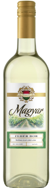
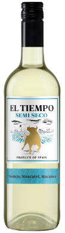

Magyar
The Magyar white wine has hints of citrus and is not too sweet. The price is 7.98€ so it's one of the cheapest. We gave it a rating of 3.2/5.

El-Tiempo
El-Tiempo is also a good choise of white wines it tastes okay and is almost the same price as Magyar (7.99€). I personaly prefer Magyar because it's a bit more sweeter than El-Tiempo. We gave it a rating of 3.0/5.
